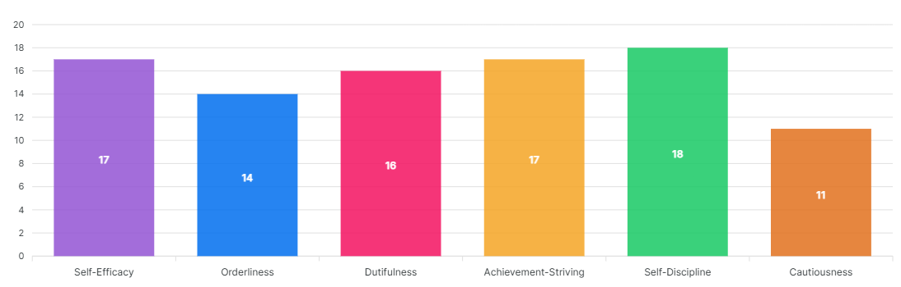

Conscientiousness concerns the way in which we control, regulate, and direct our impulses.
Impulses are not inherently bad; occasionally time constraints require a snap decision, and acting on our first impulse can be an effective response. Also, in times of play rather than work, acting spontaneously and impulsively can be fun. Impulsive individuals can be seen by others as colorful, fun-to-be-with, and zany.
Nonetheless, acting on impulse can lead to trouble in a number of ways. Some impulses are antisocial. Uncontrolled antisocial acts not only harm other members of society, but also can result in retribution toward the perpetrator of such impulsive acts. Another problem with impulsive acts is that they often produce immediate rewards but undesirable, long-term consequences. Examples include excessive socializing that leads to being fired from one's job, hurling an insult that causes the breakup of an important relationship, or using pleasure-inducing drugs that eventually destroy one's health.
Impulsive behavior, even when not seriously destructive, diminishes a person's effectiveness in significant ways. Acting impulsively disallows contemplating alternative courses of action, some of which would have been wiser than the impulsive choice. Impulsivity also sidetracks people during projects that require organized sequences of steps or stages. Accomplishments of an impulsive person are therefore small, scattered, and inconsistent.
A hallmark of intelligence, what potentially separates human beings from earlier life forms, is the ability to think about future consequences before acting on an impulse. Intelligent activity involves contemplation of long-range goals, organizing and planning routes to these goals, and persisting toward one's goals in the face of short-lived impulses to the contrary. The idea that intelligence involves impulse control is nicely captured by the term prudence, an alternative label for the Conscientiousness domain. Prudent means both wise and cautious.
Persons who score high on the Conscientiousness scale are, in fact, perceived by others as intelligent. The benefits of high conscientiousness are obvious. Conscientious individuals avoid trouble and achieve high levels of success through purposeful planning and persistence. They are also positively regarded by others as intelligent and reliable. On the negative side, they can be compulsive perfectionists and workaholics. Furthermore, extremely conscientious individuals might be regarded as stuffy and boring.
Unconscientious people may be criticized for their unreliability, lack of ambition, and failure to stay within the lines, but they will experience many short-lived pleasures and they will never be called stuffy.
Your score on Conscientiousness is high. This means you set clear goals and pursue them with determination. People regard you as reliable and hard-working.
